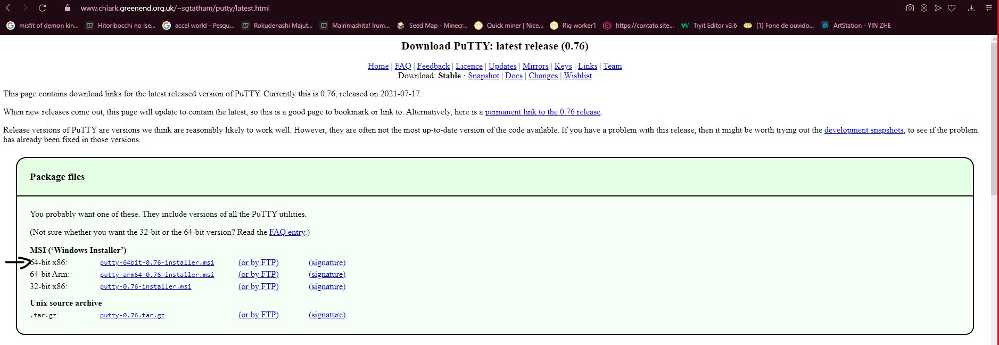
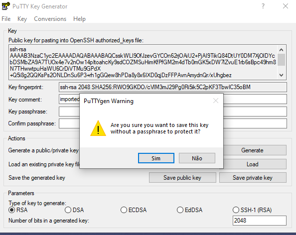

- Insira o ID da Conta, nome de usuário e sua senha.
- Execute a função "EC2".
- Selecione o Sistema Operacional desejado e clique em próximo.
- Selecione uma instância e clique em próximo.
- Configure os detalhes da instância e clique em próximo.
- Selecione o tipo de armazenamento e clique em próximo.
- Adicione as tags. Na chave insira o valor "Name" e na coluna Valor insira o nome desejado, clique em próximo.
- Adicione os protocolos HTTP e HTTPS, e ocasionalmente configure o nome do grupo de segurança. Clique em "Verificar e Ativar".
- Revise as características atribuídas e clique em "Executar".
- Agora você irá selecionar um novo par de chaves e atribuir um nome a ela. Importante: você não poderá perder este arquivo, guarde-o bem em sua máquina física.
- Após esses passos, sua máquina virtual da AWS estará pronta para ser manuseada.
Instalando puttygen/putty
- Acesse o site oficial da putty:
- Selecione o link de acordo com a sua máquina e Sistema Operacional.

- Após abra o instalador.
- Com o instaldor aberto, utilize o botão "Next".
- Selecione o local da instalação e de "Next".
- Agora autorize a instalação.
- Aguarde o processo de instalação.
- Concluída a ação de "Finish" e pronto. Processo concluído.
Acessando máquina via puttygen/putty
- Abra o puttygen e selecione a opção "Load".
- Selecione All Files em seu gerenciador de arquivos.
- Agora selecione a chave em formato pem.
- Após selecionar, clique em OK.
- Selecine a opção "Save private key".
- Salve a chave em seu computador.
- Agora somente de Sim para avançar.

- Abra o Putty e adicione o IP da máquina virtual criada na aba Session.
- Após selecione "SSH" no menu lateral disponível.
- Clique em "Auth".
- Dentro de Auth selecione "Browser".
- Selecione a chave criada no Puttygen.
- Agora somente selecione a opção "Open".
- Dentro da máquina virtual indique o nome da máquina. No caso abaixo utilizamos ubuntu.
Atenção após este processo você irá ter que utilizar os comandos: "sudo su", "apt update", "apt upgrade" e "apt install apache2". Na respectiva ordem apresentada.
- Pronto sua máquina da AWS está rodando em seu computador.
Acessando WinSCP
Instale o WinSCP em sua máquina:
- Abra o WinSCP e insira o IP na opção Host e nome da máquina utilizada em Usuário (ex: ubuntu). Após clique em avançado.
- Agora selecione no menu lateral "SSH" e após "Autenticação". Agora em "Arquivo de Chave privada:" selecione a chave ppk da máquina. E clique em Ok.
- Selecione Sim para confirmar o acesso.
- Agora você irá ter que utilizar o comando sudo su na máquina virtual.
- E após utilize o comando "chown -R ubuntu:ubuntu /var/www/html".
- Volte ao WinSCP e estará pronto para adicionar os arquivos na pasta raiz de hospedagem.
Atenção: você deverá adicionar os arquivos e pastas do seu site dentro da pasta "html".
E pronto! Seu site já esta disponível dentro do seu servidor da AWS na internet. (Acesse-o pelo Ip da máquina de qualquer lugar).